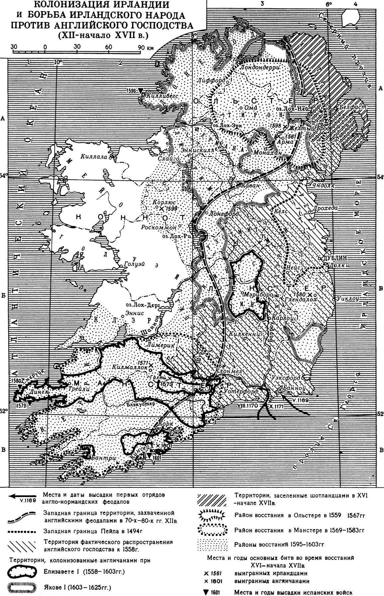

Неструктурированные заметки по теме -- 1
http://pravaya.ru/leftright/472/11671
Александр Елисеев: Британское мировое господство (март 2007, сокращено)
А что если в XXI веке Британия возьмет, да и вернет себе мировое лидерство, которое у нее было до начала «холодной войны»? Складывается такое впечатление, что британские элиты сознательно и на время сдали свои сверхимперские полномочия США, а сами использовали передышку для серьезной реорганизации собственной империи
НЕЗАМЕТНЫЙ И ТИХИЙ РЕВАНШ
...можно предположить, что Англией двигают реваншистские устремления, не особо ею афишируемые. И дело здесь даже не в потерянном после войны лидерстве (которое, вполне вероятно, было «потеряно» со специальной целью). Есть куда более серьезные мотивы, уходящие своими корнями вглубь истории. Нынешние ведущие республиканские державы Запада – США и Франция – уже самим своим существованием свидетельствуют о грандиозных поражениях имперской Британии. Вспомним, что Североамериканские Штаты были английскими колониями, а еще раньше, в средние века, Англия доминировала на французских территориях.
Может быть, британские элиты терпеливо и долго готовились к исторической мести? Скажете – это все надуманно (особенно по поводу английских владений в Аквитании)? Однако исторические факты как раз говорят в пользу наличия у Британии исторического реваншизма. Планы по присоединению Франции к Англии (!) активно разрабатывались правительством Черчилля еще в 1940 году. 15 июня британский премьер сделал официальное предложение французскому правительству объединить две страны в одну. (Проект был подготовлен Жаном Моне – президентом Франко-Британского комитета). Если бы предложение приняли, то возникла бы интересная картинка – Франция тогда находилась под германским прессом, и лидерство в едином государстве автоматически перешло бы к англичанам. То есть восстановились бы времена, когда Франция находилась под владычеством английской короны.
Тогда этот проект провалился, но его, как оказывается, позднее пытались реализовать вновь. В январе этого года историки обнаружили давно уже рассекреченные документы. Из них следовало, что в 1956 году Британия и Франция готовы были объединиться в одно государство. В документах зафиксированы консультации, которые вели между собой премьер-министр Англии Энтони Иден и его французский коллега Ги Молле (в Четвертой республике именно премьер был главой исполнительной власти). Молле вполне допускал, что Франция и Британия могут объединиться под главенством королевы Елизаветы.
На случай, если подобный план покажется чересчур уж радикальным, просчитывался и другой вариант. По нему Франция должна была вступить в Британское Содружество Наций. (Кстати, вот любопытное совпадение – в том же 1956 году Англия вместе с Францией и Израилем вступили в войну с Египтом, чье руководство национализировало Суэцкий канал. Тогда этой акции активно воспротивились заклятые враги – США и СССР.)
Сегодня Британия как раз и задействует Содружество, намечая включить в него не только свои прежние владения, но, по некоторым данным, даже Алжир – бывшую французскую колонию. А мигранты оттуда, как известно, составляют достаточно большой процент населения Франции.
ЗАЧЕМ ЛОНДОНУ «ЕВРАБИЯ»?
К слову, об Алжире и афро-азиатской миграции. Считается, что Великобритания испытывает серьезные проблемы с мигрантами из «третьего мира» – как, впрочем, и многие другие европейские страны. Приводятся данные социологических опросов, согласно которым мусульманские диаспоры Англии менее интегрированы в систему светского европейского государства, чем мусульмане той же самой Франции. Так, Foreign Affairs сообщает следующую информацию: «Большинство французских мусульман принимают французские культурные нормы и с энтузиазмом поддерживают республиканские ценности, включая светскость. Различия проистекают не из религии, а из социоэкономических обстоятельств… Британские власти обнаруживают, что значительный процент мусульман – граждан Англии проявляют озлобленность, обособленность и становятся опасными… Проблема кроется в сепаратизме: по прошлогодним опросам 81% (по сравнению с 41% во Франции) английских мусульман заявили, что они, во-первых, мусульмане, а во-вторых, англичане». («Исламизм или групповая солидарность». – «Смысл», №2, 2007)
Так-то оно, может быть и так, но только уличные волнения мигрантов произошли в Париже, а не в Лондоне. И бунтовали представители общин, «проникнутых» светскими ценностями Французской республики. Почему же это произошло? Может быть, как раз эта большая интегрированность и способствует тому, что очень значительный процент мигрантов во Франции считают страну именно своей, но при этом желают, чтобы она и жила по их законам? Отсюда и волнения, зачастую принимающие революционный характер.
А теперь представим себе, что во Франции и других странах Европы еще раз вспыхнут волнения такого же (или даже большего) масштаба, как и осенью 2005 года. Можно быть уверенным в том, что Великобритания сумеет переключить внимание деструктивных элементов собственной мусульманской общины как раз на пространство, находящееся за Ла-Маншем. Между прочим, сделать это будет не трудно – Лондон является крупнейшим в мире центром разного рода исламистских движений и фондов.
Надо предполагать, что Великобритания сможет выиграть и от грядущего внешнеполитического провала США, и от вполне возможной исламизации Европы (особенно Франции с ее пятимиллионной мусульманской общиной), которая сегодня идет довольно-таки быстрыми темпами. В этом случае она почти автоматически возвращает себе прежнюю роль лидера, причем ее владычество будет даже еще более сильным.
Очевидно, сегодня это понимают многие представители западных элит, которые тихо, но верно копают под Британию. Вот пример – главный прокурор Международного уголовного суда в Гааге Луис Монеро-Окампо заявил, что премьер-министр Великобритании Тони Блэр может оказаться на скамье подсудимых. Там ему предложат ответить за преступления в Ираке. Прокурор не исключил, что такая же судьба может постигнуть и Буша. Заметим, Буш упомянут после Блэра, хотя, по логике вещей, он должен фигурировать на первом месте. Кто-то явно обеспокоен тем, чтобы не дать Британии выкрутиться, свалить все на «американскую военщину».
Из Старикова:
Первые съезды революционеров
Давайте посмотрим, где проводили свои съезды наши революционеры. Для примера возьмем самых известных - социал-демократов. Будущих ленинцев. Начинают они, пока никому неизвестные, на Родине: Первый съезд проходит 1-3 марта 1898 года в Минске. Что на этом съезде произошло? Да, практически ничего. На съезде не было создано четкой партийной структуры. Социал-демократы так и остались без программы, без устава, даже без единого руководства. Но это неважно - самое главное, что в Минске имел место факт провозглашения революционных целей и заявлено о желании создать партию, эти цели преследующую.
Этого оказалось достаточным - ребят замечают и понемногу начинают к ним присматриваться. Ложка ведь хороша к обеду, а революционеры, соответственно, - к революции! Однако в любом случае с ними надо познакомиться поближе, и Минск или Киев для таких встреч место не лучшее. Поэтому из Краткого курса истории ВКП(б) мы узнаем, что Второй съезд РСДРП прошел уже за границей: сначала в Брюсселе, а потом в Лондоне, с 17-го июля по 10 августа 1903 года. Подготовка к первой попытке сокрушения России заканчивается. Своя роль в будущем сценарии уготована и социал-демократам. Именно им наряду с социалистами - революционерами (эсерами), взрывать изнутри свою Родину. И этот долгожданный момент настает: начинается русско-японская война. Во время нее частота съездов социал-демократов резко возрастает: не раз в пять лет, а каждый год!
Удобнее всего совещаться в столице туманного Альбиона. Здесь хорошо и спокойно, да еще британцы и денег подбрасывают, поэтому Третий съезд партии Ленина проходит снова в Лондоне с 12 по 27 апреля 1905 года. Четвертый съезд несколько выбивается из общей колеи - проходит с 10-по 25 апреля 1906 года в Стокгольме (поближе к России - там сейчас самый разгар революции!). Зато Пятый - вновь в гостеприимном Лондоне, с 30 апреля по 19 мая 1907 года. Однако революция закончилась, Россию уничтожить не удалось и пора отправляться буйным революционерам на «консервацию»: частота «встреч» падает почти до нуля. Следующий, Шестой съезд партии состоится только через десять лет(!), уже после Февральской революции, с 26-го июля по 3-августа 1917 года.
Итого - если отбросить самый первый и самый последний «слет», то из четырех съездов ленинской партии три были проведены в Лондоне. Случайно, скажут нам историки. Нет, революция дело тонкое - тут случайностей не бывает. Отчего так любят наши социалисты именно британскую столицу, а не Париж, не Берлин, и даже не нейтральную Женеву и Цюрих?
Важно:
Обычно говорят об одном Ленине, но в приснопамятном поезде ехала целая толпа революционеров разного толка.
Ключ к разгадке происхождения наших революций: приезд Ленина в апреле 1917 года из Швейцарии.
Февральская революция
Наблюдатели со стороны в большинстве своем чувствуют, что царизм держал Россию воедино, а если это единство отнять - Россия пойдет прахом. -- Лондонская газета «Таймс», 4 марта 1917 года
Нам всегда говорили, что события Февральской революции просты и понятны: голодные люди вышли на улицы, требуя хлеба, а потом перешли к политическим лозунгам. Так, мол, и пало в России самодержавие. Но так кажется только на первый взгляд. Павел Николаевич Милюков, один из руководителей февральского переворота, лидер партии конституционных демократов (кадетов) явно с такой простотой не согласен. Ему, непосредственному участнику событий, написавшему свою "Историю второй русской революции" сразу по горячим следам, механизм происхождения Февраля отнюдь не ясен.
"Здесь мы касаемся самого темного момента в истории русской революции" - пишет Милюков, начиная свой рассказ о событиях, положивших начало Февральской революции. Показательно и название главы его книги, откуда взяты эти строки: "Тайные источники рабочего движения". Вопрос, как и почему она началась и есть "самый темный момент" в истории Февральской революции. Это очень странно: начинаешь читать мемуары главных действующих лиц и постоянно натыкаешься на "белые пятна". До этого была в голове полная ясность: хлеб - демонстрации - революция, но вот открываешь мемуары одного из основных «февралистов» и начинаются загадка за загадкой.
"Некоторым предвестием переворота было глухое брожение в рабочих массах, источник которого остается неясен, хотя этим источником наверняка не были вожди социалистических партий, представленных в Государственной Думе".
Начало перевороту положили рабочие демонстрации, но кто их организовал и почему они начались, Милюкову абсолютно непонятно. Ясно только то, что сами кадеты их не инициировали, не делали этого и все их парламентские союзники по думскому Прогрессивному блоку. Не выводили людей на улицы и эсеры. В этом легко убедиться, полистав мемуары известного нам лидера этой партии Виктора Чернова. После главы о ходе мировой войны и попытках революционеров разных стран найти взаимопонимание, он сразу пишет о своем возвращении в Россию уже после Февральской революции. Соверши столь важное деяние эсеры, они бы трубили об этом на каждом углу: это мы начали процесс, приведший к свержению проклятого царизма!
Не организовывали рабочие демонстрации и большевики, позже приписавшие устами советских историков заслуги организации манифестаций себе. Но это будет сделано ими значительно позднее, когда многих участников событий не будет в живых, а остальные будут писать книги в эмиграции. Поэтому вопрос, "кто вывел людей на улицу в феврале 1917 года", будет уже интересен только узкому кругу специалистов и с красными историками никто не будет спорить. Для истинных организаторов гибели России это было удобно и выгодно - Ленин и его партия делали для них стопроцентное алиби. Хотя опровергнуть ложь совсем не сложно, достаточно спросить, кто из большевистских вождей организовал рабочие демонстрации, приведшие к свержению царизма. Тут и станет абсолютно ясно, что все они сидели по заграницам, ссылкам и тюрьмам, а Владимир Ильич Ленин узнал о "подготовленной его партией" революции из свежих швейцарских газет. И удивлению его не было предела.
Но для нас момент начала Февраля - момент ключевой. Нам важно знать точно, с чего началась гибель Российской империи, а потому наберемся терпения, и углубимся в материал. Здесь нас ждут новые открытия. Если быть совсем точным, то логическая цепочка событий должна быть такова: хлеб - демонстрации рабочих - их столкновения с полицией - восстание солдат городского гарнизона - революция. Загадки тут на каждом шагу:
- почему рабочие вышли митинговать - неизвестно;
- неизвестно и кто эти демонстраций организовал.
Выходит, сами собой рабочие прекратили работу, от скуки нарисовали плакаты и лозунги, и сами не зная почему, двинулись свергать самодержавие. При дальнейшем углублении в хронологию февральской революции ясности не прибавляется. Никто не может вразумительно ответить на второй ключевой вопрос:
- Кто вывел на улицу солдат?
"Как раз накануне него (выступления солдат - Н.С.) было собрание представителей левых партий, и большинству казалось, что движение идет на убыль и что правительство победило - пишет Милюков, цитируя своего коллегу по Думе В.Б.Станкевича, и добавляет от себя - Но, во всяком случае, закулисная работа по подготовке революции так и осталась за кулисами".
Вот это уже интересно! Произошла революция, а никто не может толком сказать, как случились ее основные события, приведшие к смене власти в России. Вроде никто не готовил ни рабочих, ни солдат, а они как по команде, вышли на улицы в нужный момент и тем решили исход дела в пользу переворота. "Руководящая рука, несомненно, была, только она исходила, очевидно, не от организованных левых партий" - делится впечатлениями Милюков. В словах руководителя кадетов, чувствуется неуверенность и смущение. Революция свершилась, но ни правые (т. е. кадеты и октябристы), ни левые (т. е. эсеры и социал-демократы) ее не организовывали. Есть от чего смутиться: ждали «свободы» десятилетиями, а когда она пришла никто не знает, кому говорить за это спасибо!
1925 — независимость СССР беспокоит
министр иностранных дел Англии О. Чемберлен в феврале 1925 г. отмечал, что «Россия нависла, как грозовая туча, над восточным горизонтом Европы - угрожающая, не поддающаяся учету, но, прежде всего, обособленная». Поэтому, по его мнению, необходимо: «определить политику безопасности вопреки России и даже, пожалуй, за счет России». (Локарнская конференция 1925 г., Документы, М., 1959, с. 43).
Именно «безучетность» и «обособленность» СССР больше всего тревожили американских и английских банкиров.
Для преодоления этой «обособленности» в октябре 1925 г. в швейцарском городе Локарно открылась международная конференция с участием Англии, Франции, Германии, Италии, Бельгии, Польши и Чехословакии. Цели конференции определил госсекретарь США Ф. Келлог: «Конференция в Локарно, естественно, следовала за работой комитета Дауэса». (Conngressional Record, vol. Pt 1., Washington, 1926, p 906).
Хотя США формально не принимали участия в работе конференции, они руководили и направляли ее работу. По этому поводу лидер Компартии Германии Тельман отмечал: «Американские банкиры не участвуют в Локарно официально. Но американский финансовый капитал, рассматривающий Европу, как большую колонию, весьма деятельно сотрудничал при осуществлении Локарно. Представители американского финансового капитала недвусмысленно дали понять, чего американский империализм желает в Локарно». (E. Thalmann, Lokarno der neue Krigpakt. Berlin, 1925, s. 4).
Самсонов Александр
Об Англии, как античеловеческом государственном образовании в истории человечества
Нынешние постсоветские режимы любят порассуждать, да и внутри России находятся такие авторы, о Российской империи, как о «тюрьме народов», а о СССР, как о гигантском ГУЛаге. При этом как-то не упоминают, что любимый всевозможными западниками Лондон, Британская империя была одним из самых кровожадных государственных образований за всю историю человечества.
Всего несколько примеров британской кровожадности
"Огораживание"
- Британская элита не перед масштабными международными преступлениями, фактически провели геноцид своего народа, ликвидировав большую часть крестьянства Англии как класса, этот процесс был назван «огораживание». Хотя для людей этот слово не несёт отрицательной нагрузки – против согнанных со своих земель крестьян, превращённых в бродяг, нищих, было принято т.н. «Кровавое законодательство». Это были законы против бродяг и нищих, издававшиеся в Англии в конце XV-XVI вв. Тюдорами. Они вводили жестокие наказания для людей, обвинённых в бродяжничестве и нищенстве. Пойманных бичевали, клеймили, отдавали в рабство - на время, а в случае попытки побега и пожизненно, при третьей поимке вообще казнили.
Главными жертвами этих репрессивных мер стали крестьяне, которых согнали с земли в результате процессов т.н. огораживаний. Начало «кровавому законодательству» положил статут 1495 года короля Генриха VII. Особой жестокостью к людям отличались статуты 1536 и 1547 годов. Закон 1576 года предусматривал создание работных домов для нищих, где людей превращали фактически в рабов, работающих в нечеловеческих условиях за миску баланды. Принятый парламентом «Акт о наказаниях бродяг и упорных нищих» 1597 года создал окончательную формулировку закона о бедняках и бродягах и действовал в таком образе вплоть до 1814года. «Кровавые законы» не могли остановить роста нищеты и бродяжничества. Но зато была достигнута другая цель: они подавляли сопротивление ограбленных крестьян, превращая запуганных, согнанных с земли свободных крестьян-общинников в людей, готовых к рабскому труду на самых страшных условиях, фактически под угрозой немедленной казни.

Репрессии ирландцев
- Англия столетиями осуществляла геноцид ирландцев, так, население Ирландии до покорения англичанами превышало население Англии в разы. Одним из самых известных геноцидов ирландцев стало вторжение Кромвеля. Он прибыл с войском в 1649 году, города Дроэду и Уэксфорд около Дублина были взяты штурмом. В Дроэде Кромвель приказал вырезать весь гарнизон и католических священников, а в Уэксфорде сама армия учинила бойню уже самовольно. В течение 9-ти месяцев армия Кромвеля покорила почти весь остров, он затем передал руководство своему зятю Айртону.
Многие ирланды бежали из страны или бежали на запад острова, а их земли раздавались английским колонизаторам, в основном из армии Кромвеля. Если в 1641 году в Ирландии проживало более 1,5 млн. человек, а в 1652 г. осталось лишь 850 тыс., да и то из них 150 тыс. были английскими и шотландскими колонистами. Ирландский народ потерял до 50-56% своего населения. Такой геноцид трудно сыскать в истории других стран. Ирландцев, даже тех, кто не воевал с англичанами, лишали земель и ссылали в бесплодную и пустынную область Коннахт на западе острова, обрекая тем людей на голодную смерть - «акт о поселениях» 1652 года. Если же к 1 мая 1654 года кого-либо из депортированных ирландцев ловили вне этой области, его ждала смертная казнь. Ирландцы этот акт назвали «Ад или Коннахт».
Значительную часть населения ирландцев, включая женщин и детей, превратили в белых рабов и вывезли в английские колонии в Вест-Индии. Люди в тот период в Ирландии стоили меньше волков – так, английским солдатам платили 5 фунтов за голову «бунтаря или священника» и 6 фунтов — за волчью голову.
Колонизацию продолжали и в последующие столетия: в 1691 году Лондоном был принят ряд законов, которые лишали католиков и протестантов, не принадлежащих к Англиканской церкви, свободы вероисповедания, права на образование, права на голос и права на государственную службу. В итоге колонизации существенно изменилась этническая картина населения Ирландии, увеличился процент англичан и шотландцев, была создана протестантская управленческая элита. В Ирландии был создан протестантский правящий класс, в 1775 году католики-ирландцы владели лишь 5% земель. Им запрещали давать своим детям католическое образование, ограничивали сферы деятельности, в первую очередь, в торговле, фактически оставив только сферу земледелия, где господствовали кабальные формы эксплуатации. Ирландия фактически стала одним из источников накопления английских капиталов и развития промышленности в Англии.
В итоге малоземельность ирландских крестьян стала главной причиной страшного голода, начавшегося в Ирландии в 1740-х годах и повторившегося столетием позже, в 1845—1849 годах, из-за сгона мелких арендаторов с земли (ирландское «огораживание») и отмены «хлебных законов», болезней картофеля. В результате него погибло 1,5 млн. ирландцев и началась массовая эмиграция за Атлантический океан, в основном в США. Так, с 1846 по 1851 годы выехали 1,5 млн. человек, миграция стала постоянной чертой исторического развития Ирландии и её народа. В итоге только в 1841—1851 годах население острова сократилось на 30% . И в дальнейшем Ирландия стремительно теряла своё население: если в 1841 году численность населения острова составляла 8 млн. 178 тыс. человек, то в 1901 году — всего лишь 4 млн. 459 тыс. человек.
Почему-то про столетия геноцида ирландцев англичанами не снимают фильмы, не пишут статей, не трубят на всех углах.

Работорговля
- Англия была мировым лидером в работорговле, на её счету миллионы убитых и погубленных жизней. Англичане в своих колониях в Вест-Индии, в том числе в североамериканских, использовали так называемых «белых рабов» - военнопленных шотландцев, ирландцев, а затем и вообще ирландцев, включая женщин, детей из покоренной Ирландии. Затем повезли и негров, всего в английские колонии в Северной Америке, а позднее в независимые Штаты было привезено около 13 миллионов рабов из Африки, но учитывая тот факт, что на каждого привезённого живым раба приходилось по 3-4 погибших во время "охоты на людей" в самой Африке и во время транспортировки, цифры геноцида получаются просто колоссальные.
Причём англичане вели ещё один вид работорговли – вывозя в колонии так называемых «законтрактованных слуг» из былых европейцев, включая и граждан Англии, фактически это тоже были «белые рабы», без элементарных прав.
Травля опиумом Китая
- Лондон травил наркотой граждан Китая, да и своих граждан. Англия смогла наладить массированную поставку опиума на территорию Китая, получая взамен огромные материальные ценности, золото, серебро и мех. Кроме того достигалась и военно-стратегическая цель — разложение китайской армии, чиновничества, народа, потерю ими воли к сопротивлению. В итоге, с целью избавиться от разлагающего влияния опиума и спасения страны, китайский император в 1839 году начал массированную операцию по конфискации и уничтожению запасов опиума в Кантоне.
Колониальные суда с грузом опиума просто начали топить в море. Фактически это была первая в мире попытка борьбы с наркоторговлей на уровне государства. Лондон отреагировал войной – начались опиумные войны, Китай потерпел поражение и вынужден был принять кабальные условия английской государственной наркомафии. Это приносило английской элите огромные прибыли, в том числе и Британской королевской семье. Ущерб для Китая был страшный, в наркотическом дурмане гибли целые поколения, плюс интеллектуальная и физическая деградация народов. Только в 1905 году власти Китая смогли принять и начать выполнять программу поэтапного запрета опиума. До настоящего времени в Китае самая жёсткая в мире антинаркотическая политика, а борьба с наркотиками - важнейшая задача государства.
Подсадили на опиум и английских рабочих – примерно 5% населения Англии.
Первые концлагеря
- Первые масштабные концлагеря были также созданы англо-саксами – во время Гражданской воны между штатами. Первые концлагеря, в современном понимании слова, были созданы британским лордом Китченером в Южной Африке для бурских семей во время т.н. англо-бурской войны 1899 -1902 годов. Бурские отряды приносили англичанам массу неприятностей, поэтому было решено создать «лагеря концентрации». Для того чтобы лишить бурских партизан (буры – это потомки голландских, французских и немецких колонистов) возможности снабжения и поддержки местного населения, сконцентрировали фермеров, в основном женщин и детей, так как мужчины поголовно воевали с англичанами, в специально отведенных местах, фактически обрекая их на смерть, потому что снабжение лагерей было поставлено крайне плохо. Похоже это и на «институт заложничества», буров вынуждали капитулировать.
Пойманных мужчин вообще вывозили за пределы Родины, отправляя в подобные лагеря на территории Индии, Цейлона и других британских колоний. Всего в лагеря англичане согнали примерно 200 тысяч человек – это была примерно половина белого населения бурских республик. Из них около 26 тысяч человек, это по самым скромным подсчетам, погибло от голода и болезней, большинство из погибших это самые слабые к испытаниям - дети. Так, в концлагере в Йоханнесбурге умерли почти 70% детей в возрасте до 8 лет. В течение одного года, с января 1901 года по январь 1902 года, в «лагерях концентрации» от голода и болезней умерли около 17 тысяч человек: 2484 взрослых и 14284 ребенка.
А уж сколько миллионов было уничтожено в колониях Британии - геноцид коренного населения колоний в Северной Америке, Австралии, Тасмании (тасманийцев всех уничтожили), не один десяток миллионов был уничтожен в Индии (в основном с помощью голода), сотни тысяч, миллионы уничтожены в развязанных Лондоном войнах по всему земному шару. Понятно, почему Гитлер и его соратниками были англофилами, они равнялись на «белых братьев» из Лондона, которые задолго до них покрыли планету сетью концлагерей и тюрем, жесточайшим террором подавляя любые признаки сопротивления, создав свой «Мировой Порядок».
А если ещё подсчитать материальный урон, нанесенный различным странам и народам, то становится просто удивительно, почему мы не видим международных процессов по осуждению самых разных геноцидов, преступлений против человечности, совершённых Лондоном, английской элитой.
UPD из коментов:
В Индии англичане ввели такую налоговую систему, которая повлекла за собой тотальное разорение и пауперизацию индийцев. «Первый же год господства Ост-Индской компании в Бенгалии дал резкий скачок в росте земельных налогов: размер ежегодного земельного налога при туземном правительстве за предыдущие три года, кончая 1764/65 г., составлял в среднем 7 483 тыс. рупий, или 742 тыс. ф. ст., в первый же год английского господства размер налога возрос до 14 705 тыс. рупий, или 1 470 тыс. ф. ст., т.е. был увеличен почти вдвое. Непрерывный рост дают налоги и по другим провинциям; например в Агре в первый же год английского господства земельный налог был повышен на 15%, на третий же год — на 25% по сравнению с общим размером налога туземного правительства. Земельный налог в 1817 г. — последнем году государства Mahratta — составлял 80 лакх рупий. В 1818 г. — первом году британского управления — земельный налог возрос до 115 лакх рупий, а в 1823 г. уже составлял 150 лакх рупий, т.е. в течение 6 лет земельный налог возрос почти вдвое. За 11 лет (1879/80–1889/90) в Мадрасском президентстве было продано с аукциона в уплату земельного налога 1 900 тыс. акров земли, принадлежавшей 850 тыс. крестьянских хозяйств. Это означает, что 1/8 всего сельскохозяйственного населения президентства была лишена земельной собственности. Однако у крестьянства отбиралась не только земля, но и жилища, рабочий скот, нищенское имущество домашнего обихода, включая кровати, одежду, кухонные принадлежности» [Бернье 1936: 22]. «Эффективное производство» в Индии при британцах, с расхваленной Фергюсоном «свободой торговли» и т.п., выглядело так: со времен Акбара, первого из Великих Моголов (то есть с 1570 г.), средний урожай пшеницы с поливных земель не вырос, а с неполивных даже сократился — с 1 550 английских фунтов с акра до 900 [Bhattaharyya 1973: XVI] Еще несколько слов о «свободе торговли», которую, по утверждению Фергюсона, Британская империя якобы насаждала в Индии. В XVI–XVII вв. текстильная промышленность Британии была совершенно неконкурентоспособна по сравнению с индийской. Индийские ткани (и хлопчатобумажные, и шерстяные, и шелковые) по качеству были выше и зачастую стоили на европейских рынках дешевле, чем английские. Чтобы искусственно оградить свой недостаточно качественный товар от конкуренции, британские «фритредеры» прибегли к 80-процентной покровительственной пошлине [Неру 1981: 206]. Как указывает Хобсбаум, английская текстильная промышленность, с создания которой и началась «промышленная революция», вообще возникла как «побочный продукт заморской торговли, она производила сырьевой материал… [в то время как] индийский хлопок или миткаль… завоевал рынки». Английские текстильщики «вынуждены были пробиваться на рынок со своими грубыми поделками», но, разумеется, безуспешно. Проблема была решена очень «либерально» — путем запрета на ввоз индийского миткаля [Хобсбаум 1999: 52]. А когда даже это не помогло -- решили эту проблему в духе «свободы торговли»: захватили главный центр индийского текстильного производства Бенгалию, разрушили его, разграбили и сознательно разорили местных текстильщиков. Причем «пионеры либерализма и свободного рынка» сочли нужным уничтожить конкурентов физически. Метод был тот же, что и в Ирландии, — искусственно организованный голод. В 1769–1770 гг. в разграбленной англичанами Бенгалии разразился голод, который унес треть жителей — 7 млн. человек [Большая советская энциклопедия 1953: 60]. (По другим подсчетам — 10 млн. [Антонова, Бонгард-Левин, Котовский 1979: 283; Гхош 1951: 20; Бошам 1935: 17].) В 1780–1790-х годах трагедия в Бенгалии повторилась: на этот раз от голода вымерла уже половина населения — 10 млн. человек [Губер, Хейфец 1961: 55].
UPD из комментов:
Историк Каролин Элкинс написала интересную книгу о британском режиме в Кении после Второй мировой войны (http://www.amazon.ca/Imperial-Reckoning-Untold-Story-Britians/dp/product-description/0805080015). В ответ на убийство 32 белых колонистов повстанцами Мао-Мао, англичане вырезали около 300 тыс. представителей народности Кикуйю и еще полтора миллиона людей загнали в лагеря. И все эти прелести происходили не при царе Горохе, а в 1950-гг, и даже после ХХ съезда КПСС. А что собой представляли английские концлагеря, описывает израильский историк Шмуэль Дотан: «В концлагере Беньямина заключенные работали 12 часов в день почти без перерыва. На обед им давали две черствые питы, на ужин был жидкий овощной суп. С голоду люди ели траву и косточки арбузов. Не было ни воды для мыться, ни крыши над головой. Заключенные спали вповалку под открытым небом. По утрам их будили охранники и ударами палок (" точно как ослов"). На работу политзаключенных возили в каменоломни под Хайфу, держа их часами в вагонах где люди не могли даже сесть из-за тесноты». Но это все отрывочные сведения. Насколько я понимаю, обобщающего исследования об английском ГУЛАГе в колониях нет до сих пор. А ведь практически вся империя была покрыта лагерями. Неру, вспоминал не без издевки, что когда услышал об «Атлантической хартии», провозглашавшей стремление союзников уничтожить систему лагерей (нацистских разумеется) не смог оценить ее пафос поскольку как раз сидел на английской зоне… """
UPD из комментов:
Только вот про Индию можно было бы поподробнее.Геноцид в этой стране и разграбление её трудно с чем-то сравнить.Не затронута тема насильственного переселения англичанами своих же несовершеннолетних детей в Австралию в конце 19-го,начала 20 века.
UPD из комментов
«Правила войны», 1922 г.: «Воздушные бомбардировки с целью терроризирования гражданского населения, или разрушения и повреждения частной собственности не военного характера, или же причинения вреда лицам, не принимающим участия в военных действиях, воспрещаются» (статья 22, часть II). 2 сентября 1939 года английским, французским и германским правительствами было заявлено о том, что бомбардировкам будут подвергаться «строго военные объекты в самом узком значении этого слова». 15 февраля 1940 года, Чемберлен: «Что бы ни делали другие, наше правительство никогда не будет подло нападать на женщин и других гражданских лиц лишь для того, чтобы терроризировать их». Меморандум Королевских ВВС, с которым английские пилоты были ознакомлены в ночь перед атакой (13 февраля), сообщал что: Дрезден, 7 по размеру город Германии... на настоящий момент крупнейший район противника все еще не подвергавшийся бомбежкам. В середине зимы, с потоками беженцев направляющимися на запад, и войсками, которые где-то должны быть расквартированы, жилые помещения в дефиците, поскольку требуется не только разместить рабочих, беженцев и войска, но и правительственные учреждения эвакуированные из других районов. Целью атаки является нанести удар противнику там где он почувствует его сильнее всего, позади частично рухнувшего фронта... и заодно показать русским когда они прибудут в город на что способны Королевские ВВС. "Основные объекты военной промышленности следовало искать там, где они бывают в любой стране мира, то есть в самих городах. Следует особенно подчеркнуть, что кроме как в Эссене мы никогда не делали объектом налета какой-нибудь определенный завод. Разрушенное предприятие в городе мы всегда рассматривали как дополнительную удачу. Главной нашей целью всегда оставался центр города. Все старые немецкие города наиболее густо застроены к центру, а окраины их всегда более или менее свободны от построек. Поэтому центральная часть городов особенно чувствительна к зажигательным бомбам"(с) Артур "Бомбер" Харрис. Отмечен памятником за свои действия во время войны.
UPD из комментариев
Так в 1842 году население империи составляло 416 118 200 человек, из них 2 млн. — наркоманов, в 1881 году —369 183 000 человек, из них 120 млн. — наркоманов. Прикиньте потери СССР в Великой Отечественной и китайцев. Но эти убитые миллионы ерунда по сравнению с тем, что почти половину китайцев сделали наркоманами. «Пока Китай остается нацией наркоманов, нам не стоит бояться того, что эта страна превратится в серьезную военную державу, так как эта привычка высасывает жизненную силу из китайцев», — так завершил свое выступление в 1895 году британский консул в Китае Джефф Херст, выступая на заседании Королевской комиссии по опиуму. Далее были трупы начиненные героином своих солдат, которых они вывозили из ЮВА, а последняя опиумная война (дай бог, чтоб последняя) идет сейчас: эти слуги мерзкой крысы с английского престола, снесли 11 сентября 2001 года Всемирный торговый центр и пульнули крылатой ракетой по Пентагону, на сем основании они ввели войска в Афганистан, где развернули посадки мака, доведя объем производства до 80% мирового. На дежурство в качестве надсмотрщика выезжал наследный принц Гарри - не какой-нибудь облапошенный томми, а член королевской семьи, так что сэр, про соски сосите сами и щенков борзой заткните в свою задницу: это нас травят эти вонючие выродки той самой крысы... Да, кстати, на днях подотчетная им комиссия ООН предложила легализовать потребление наркоты во всем мире, в соответствии с приведенными выше рекомендациями консула Первой опиумной войны. И чем эти сволочи аргументируют: мол не найдено эффективных способов борьбы с наркоманией, что есть гнусная ложь в стиле этих империалистов: пришедшее в 1949 году Народное правительство Китая решило эту задачу очень просто - послав "цвет нации" (поКараганову) на перевоспитание в деревню, сейчас накроманов в Китае нет. Нам бы так с этими "лучшими людьми": http://www.clumba.su/genetika-genofond-genocid/
Источники:
http://haspar-arnery.livejournal.com/82671.html?thread=354799
Байер, Б.; Бирнштайн, У.; Гельхофф, Б. и др. История человечества. М., 2002.
Колеман Д. Комитет 300. 2010.
Мортон А. Л. История Англии. М., 1950.
Николай С. Запад против России. Главный враг России. М., 2009.
Ричард Дейвенпорт-Хайнс. В поисках забвения. Всемирная история наркотиков. 1500
– 2000. М., 2004.
http://ru.wikipedia.org/wiki/История_Ирландии
http://militera.lib.ru/h/drogovoz_ig2/index.html